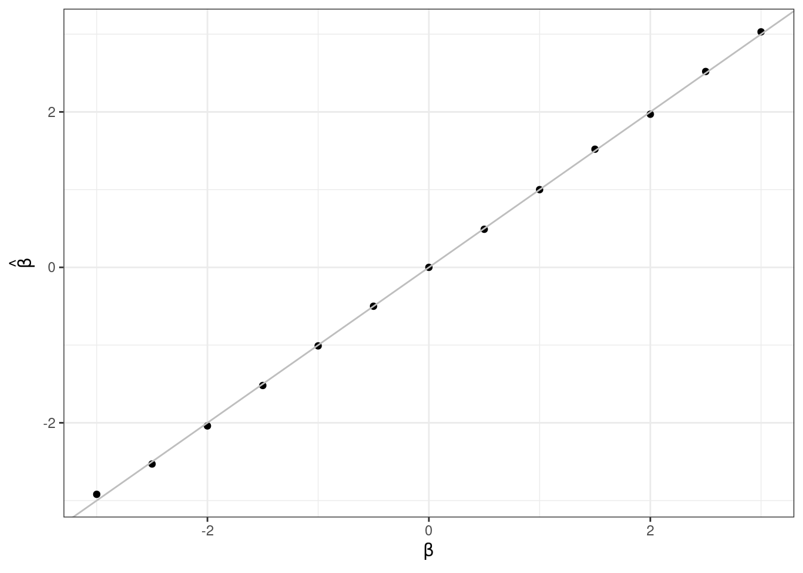
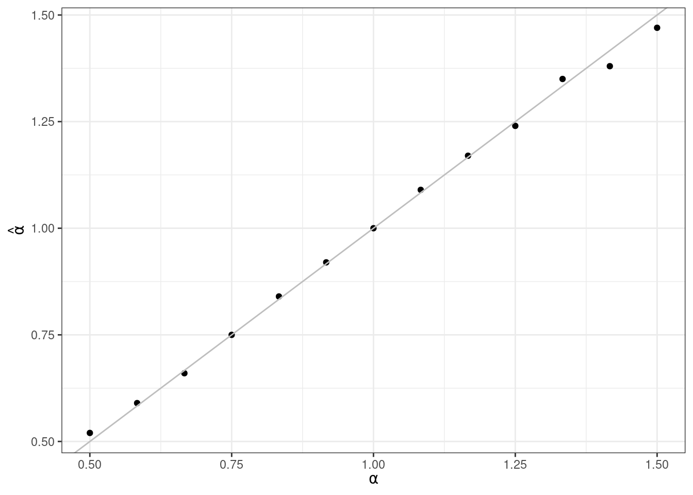

IRT Voraussetzungen
Übung 1
Wir schauen uns eine ganz simple Version an. Wer interessiert ist, und z.B. Daten für eine Poweranalyse simulieren möchte, findet hier Unterstützung. Installieren und/oder lade folgende Pakete für diese Übung:
Gleichung
Zuerst müssen wir festlegen, was wir eigentlich simulieren wollen. Wir starten mit einem 2PL Modell. Wie sah die Gleichung dafür noch einmal aus?
\[ P(X_{is} = 1|\theta_s,\beta_i,\alpha_i) = \frac{\exp(\alpha_i(\theta_s-\beta_i))}{1 + \exp(a_i (\theta_s - \beta_i))} \tag{1}\]
- Versuche noch einmal, alle Elemente von Gleichung 1 für dich selbst zu erklären.
Wir versuchen zu schätzen wie hoch die Wahrscheinlichkeit ist, dass eine Person \(s\) ein Item \(i\) richtig (\(X_{is} = 1\)) beantwortet. Dazu nutzen wir den Diskriminationsparameter \(\alpha_i\) und den Schwierigkeitsparameter \(\beta_i\) von Item \(i\) und die Personenfähigkeit \(\theta_s\) von Person \(s\).
2PL Funktion
- Jetzt beginnt der fun part: Schreibe eine Funktion genannt
calc_2pldie Gleichung 1 in R Code umsetzt.
Der Aufbau der Funktion könnte so aussehen:
calc_2pl <- function(alpha, theta, beta){
}Befülle sie nun mit Gleichung 1. alpha, theta und beta sind hier also die Funktionsargumente (weil sie innerhalb der Klammern von function() stehen), und müssen beim späteren Aufruf der Funktion von der nutzenden Person mit Werten befüllt werden. Diese Werte können dann im Funktionskörper (zwischen {}) genutzt werden, um Gleichung 1 in R Code zu übersetzen.
alpha, theta und beta sind hier also die Funktionsargumente (weil sie innerhalb der Klammern von function() stehen), und müssen beim späteren Aufruf der Funktion von der nutzenden Person mit Werten befüllt werden. Im Funktionskörper (zwischen {}) werden sie genutzt, um \(p\) anhand von Gleichung 1 zu berechnen.
Simulieren von Daten
Jetzt geht’s los! Wir wollen nun eigene Daten simulieren. Das tolle ist: wir können so alle Aspekte selber festlegen, und daran untersuchen, wie sich das Variieren von bestimmten Parametern auf das Ergebnis auswirkt.
Items
- Zuerst die Items. Baue einen
data.framemit dem Namenitems. Er soll 13 Zeilen und 4 Spalten haben und folgendes enthalten:
-
item_id: Die ID des Items, von 1 bis 13. -
alpha: Die Diskriminationsparameter, liegen zwischen 0.5 und 1.5 in 13 gleich langen Schritten. -
beta: Die Schwierigkeitsparameter, liegen zwischen -3 und 3 jeweils im Abstand von 0.5.
Die Funktion seq() ist dein Freund. Mehr brauchst du nicht, um die Zahlenreihen zu erzeugen. Schaue dir die Dokumentation an.
items <- data.frame(
item_id = 1:13,
b = seq(-3, 3, by = 0.5),
a = seq(0.5, 1.5, length.out = 13),
c = rep(0, 13)
)Das sind also die Itemparameter, die wir in unsere Simulation packen.
- Jetzt können wir die Personen simulieren. Unser Ziel ist also ein
data.frame, der \(\theta\) Werte für die untersuchten Personen enthält. Wir simulieren 100000 Personen, derdata.framesollte also 100000 Zeilen haben. Außerdem benötigen wir zwei Spalten:
-
ID: Die ID der Person, von 1 bis 100000. -
theta: Die Fähigkeit der Person, die wir simulieren. Wir nehmen an, dass die Fähigkeit normalverteilt ist, mit einem Mittelwert von 0 und einer Standardabweichung von 1.
Wir können zufällige Daten aus einer Normalverteilung mit Hilfe der Funktion rnorm() ziehen.
set.seed(666)
## Ich setzte hier einen Seed, damit meine zufällig erzeugten Werte replizierbar bleiben.
## Wenn du den Seed in deinem Skript auf die gleiche Zahl setzt, bekommst du genau die gleichen Zufallswerte und kannst besser vergleichen.
subjects <- data.frame(
sub_id = 1:100000,
theta = c(rnorm(100000, 0, 1))
)Perfekt! Jetzt können wir die Itemantworten simulieren. Dazu sind noch ein paar kleine Schritte nötig:
- Merge die beiden
data.framessubjectsunditemszu einem neuendata.framesim_datzusammen. Und zwar so, dass wir \(1000 * 13\) Zeilen bekommen, also jede Person jedes der 13 Items zugeordnet wird (bisher noch ohne Antwort der Person, nur mit den Itemkennwerten. Das erleichtert uns im nächsten Schritt, die Antworten der Personen zu simulieren).
Nutze die Funktion merge() ohne irgendwelche weiteren Argumente.
'data.frame': 1300000 obs. of 6 variables:
$ sub_id : int 1 2 3 4 5 6 7 8 9 10 ...
$ theta : num 0.753 2.014 -0.355 2.028 -2.217 ...
$ item_id: int 1 1 1 1 1 1 1 1 1 1 ...
$ b : num -3 -3 -3 -3 -3 -3 -3 -3 -3 -3 ...
$ a : num 0.5 0.5 0.5 0.5 0.5 0.5 0.5 0.5 0.5 0.5 ...
$ c : num 0 0 0 0 0 0 0 0 0 0 ...Unser finaler data.frame hat 1300000 Zeilen, wie verlangt. Lasst uns auch noch einmal schauen, ob eine zufällige Person alle Items beantwortet hat:
Das sieht gut aus!
- Jetzt simulieren wir aus diesem Vorbereiteten
data.framedie Antworten der Personen, abhängig von ihren Fähigkeiten \(\theta\) (jede Person hat hier einen zufälligen Wert aus einer Normalverteilung mit \(\mu = 1\) und \(\sigma = 1\) bekommen) und den Itemparametern \(\alpha\) und \(\beta\) (die hatten wir einfach als Sequenz festgelegt). Lege eine neue Spaltepinsim_datan, die für jede Person die Wahrscheinlichkeit enthält, dass sie das jeweilige Item richtig beantwortet. Dafür brauchen wir jetzt unsere Funktioncalc_2pl, die wir am Anfang definiert haben! Diese nimmt aus jeder Zeile dentheta,alphaundbetaWert als input, und berechnet daraus die Wahrscheinlichkeit, dass die Person das Item richtig beantwortet.
Supereinfach geht das ganze mit der mutate() Funktion aus dem tidyverse.
sub_id theta item_id b a c p
1 1 0.7533110 1 -3 0.5 0 0.8672265
2 2 2.0143547 1 -3 0.5 0 0.9246434
3 3 -0.3551345 1 -3 0.5 0 0.7895862
4 4 2.0281678 1 -3 0.5 0 0.9251233
5 5 -2.2168745 1 -3 0.5 0 0.5966588
6 6 0.7583962 1 -3 0.5 0 0.8675190Auf den ersten Blick sieht das schonmal gut aus. Personen mit niedrigerem \(\theta\) Wert haben auch eine geringere Wahrscheinlichkeit, das Item richtig zu beantworten (vgl. z.B. Zeile 2 und 3).
- Jetzt sind wir auch schon fast am Ende. Wir müssen lediglich aus den Wahrscheinlichkeiten die tatsächlichen Antworten der Personen simulieren. Nutze die Berechneten Antwortwahrscheinlichkeiten
p, um für jede Person und jedes Item einen Wert aus einer Bernoulliverteilung zu ziehen.
Eine Bernoulliverteilung ist eine Binomialverteilung mit nur einem Versuch. Wir können daher die Funktion rbinom() nutzen, und das size-Argument auf 1 setzen.
sub_id theta item_id b a c p answer
1 1 0.7533110 1 -3 0.5 0 0.8672265 1
2 2 2.0143547 1 -3 0.5 0 0.9246434 1
3 3 -0.3551345 1 -3 0.5 0 0.7895862 0
4 4 2.0281678 1 -3 0.5 0 0.9251233 1
5 5 -2.2168745 1 -3 0.5 0 0.5966588 1
6 6 0.7583962 1 -3 0.5 0 0.8675190 1Auch das sieht erst einmal plausibel aus! Toll!
Check mit TAM
Jetzt wollen wir natürlich noch schauen, ob das Ganze so funktioniert hat, wie wir uns das vorgestellt haben. Wir wollen das TAM Paket, um ein 2PL Modell auf die Itemantworten zu fitten. Wenn alles geklappt hat, sollten wir in etwa unsere Itemparameter wiedererkennen.
- Zuerst müssen wir unsere Daten dafür noch ein bisschen aufbereiten, sprich ins Wide-Format bringen. Probiere das also mal aus!
Ich nutze dafür immer deutlich lieber die tidyverse Funktion pivot_wider() als die base-R Funtkion reshape().
sim_dat_wide <- sim_dat %>%
select(item_id, sub_id, answer) %>%
pivot_wider(names_from = item_id, values_from = answer, id_cols = sub_id)
head(sim_dat_wide)# A tibble: 6 × 14
sub_id `1` `2` `3` `4` `5` `6` `7` `8` `9` `10` `11` `12`
<int> <int> <int> <int> <int> <int> <int> <int> <int> <int> <int> <int> <int>
1 1 1 1 1 1 1 0 1 0 1 1 0 0
2 2 1 1 1 1 1 1 1 1 1 1 1 0
3 3 0 1 1 1 0 0 0 0 0 1 0 0
4 4 1 1 1 1 1 1 1 1 0 0 0 0
5 5 1 1 0 1 0 0 0 0 0 0 0 0
6 6 1 1 0 1 1 1 0 0 0 0 0 0
# ℹ 1 more variable: `13` <int>Die Spaltennamen sind jetzt unsere Item-Nummern. Pro Zeile finden sich die Antworten der Personen, entweder hat sie das entsprechende Item richtig (1) oder falsch (0) beantwortet.
- Jetzt können wir das Modell fitten. Nutze dafür wie angekündigt das
TAMPaket, und entferne noch die Spaltesub_id, wir geben nur die Itemantworten in die Funktion. Speichere den Funktionsoutput in dem Objectsim_dat_2PL.
Wir brauchen die Funktion tam.mml.2pl().
sim_dat_2PL <- tam.mml.2pl(sim_dat_wide %>% select(-sub_id), irtmodel = "2PL")....................................................
Processing Data 2024-09-26 10:20:16.797047
* Response Data: 100000 Persons and 13 Items
* Numerical integration with 21 nodes
* Created Design Matrices ( 2024-09-26 10:20:16.981059 )
* Calculated Sufficient Statistics ( 2024-09-26 10:20:17.244264 )
....................................................
Iteration 1 2024-09-26 10:20:17.280188
E Step
M Step Intercepts |----
M Step Slopes |---
Deviance = 1267150.8426
Maximum item intercept parameter change: 0.419556
Maximum item slope parameter change: 0.209449
Maximum regression parameter change: 0
Maximum variance parameter change: 0
....................................................
Iteration 2 2024-09-26 10:20:17.508865
E Step
M Step Intercepts |---
M Step Slopes |---
Deviance = 1256572.3453 | Absolute change: 10578.5 | Relative change: 0.00841853
Maximum item intercept parameter change: 0.142116
Maximum item slope parameter change: 0.13129
Maximum regression parameter change: 0
Maximum variance parameter change: 0
....................................................
Iteration 3 2024-09-26 10:20:17.747927
E Step
M Step Intercepts |---
M Step Slopes |---
Deviance = 1255075.8194 | Absolute change: 1496.526 | Relative change: 0.00119238
Maximum item intercept parameter change: 0.085173
Maximum item slope parameter change: 0.070548
Maximum regression parameter change: 0
Maximum variance parameter change: 0
....................................................
Iteration 4 2024-09-26 10:20:17.983675
E Step
M Step Intercepts |---
M Step Slopes |---
Deviance = 1254560.5132 | Absolute change: 515.3062 | Relative change: 0.00041075
Maximum item intercept parameter change: 0.064561
Maximum item slope parameter change: 0.041601
Maximum regression parameter change: 0
Maximum variance parameter change: 0
....................................................
Iteration 5 2024-09-26 10:20:18.104495
E Step
M Step Intercepts |---
M Step Slopes |---
Deviance = 1254359.2843 | Absolute change: 201.2289 | Relative change: 0.00016042
Maximum item intercept parameter change: 0.050987
Maximum item slope parameter change: 0.030886
Maximum regression parameter change: 0
Maximum variance parameter change: 0
....................................................
Iteration 6 2024-09-26 10:20:18.218689
E Step
M Step Intercepts |---
M Step Slopes |---
Deviance = 1254269.9949 | Absolute change: 89.2894 | Relative change: 7.119e-05
Maximum item intercept parameter change: 0.04019
Maximum item slope parameter change: 0.023359
Maximum regression parameter change: 0
Maximum variance parameter change: 0
....................................................
Iteration 7 2024-09-26 10:20:18.349454
E Step
M Step Intercepts |---
M Step Slopes |---
Deviance = 1254226.1047 | Absolute change: 43.8902 | Relative change: 3.499e-05
Maximum item intercept parameter change: 0.031482
Maximum item slope parameter change: 0.017898
Maximum regression parameter change: 0
Maximum variance parameter change: 0
....................................................
Iteration 8 2024-09-26 10:20:18.579544
E Step
M Step Intercepts |---
M Step Slopes |--
Deviance = 1254203.2462 | Absolute change: 22.8585 | Relative change: 1.823e-05
Maximum item intercept parameter change: 0.02456
Maximum item slope parameter change: 0.013847
Maximum regression parameter change: 0
Maximum variance parameter change: 0
....................................................
Iteration 9 2024-09-26 10:20:18.691134
E Step
M Step Intercepts |---
M Step Slopes |--
Deviance = 1254191.0072 | Absolute change: 12.239 | Relative change: 9.76e-06
Maximum item intercept parameter change: 0.019126
Maximum item slope parameter change: 0.01079
Maximum regression parameter change: 0
Maximum variance parameter change: 0
....................................................
Iteration 10 2024-09-26 10:20:18.802927
E Step
M Step Intercepts |--
M Step Slopes |--
Deviance = 1254184.3636 | Absolute change: 6.6436 | Relative change: 5.3e-06
Maximum item intercept parameter change: 0.014893
Maximum item slope parameter change: 0.008455
Maximum regression parameter change: 0
Maximum variance parameter change: 0
....................................................
Iteration 11 2024-09-26 10:20:19.031997
E Step
M Step Intercepts |--
M Step Slopes |--
Deviance = 1254180.7248 | Absolute change: 3.6388 | Relative change: 2.9e-06
Maximum item intercept parameter change: 0.011608
Maximum item slope parameter change: 0.006653
Maximum regression parameter change: 0
Maximum variance parameter change: 0
....................................................
Iteration 12 2024-09-26 10:20:19.136445
E Step
M Step Intercepts |--
M Step Slopes |--
Deviance = 1254178.7154 | Absolute change: 2.0093 | Relative change: 1.6e-06
Maximum item intercept parameter change: 0.009062
Maximum item slope parameter change: 0.005253
Maximum regression parameter change: 0
Maximum variance parameter change: 0
....................................................
Iteration 13 2024-09-26 10:20:19.252339
E Step
M Step Intercepts |--
M Step Slopes |--
Deviance = 1254177.5963 | Absolute change: 1.1192 | Relative change: 8.9e-07
Maximum item intercept parameter change: 0.007088
Maximum item slope parameter change: 0.004157
Maximum regression parameter change: 0
Maximum variance parameter change: 0
....................................................
Iteration 14 2024-09-26 10:20:19.383681
E Step
M Step Intercepts |--
M Step Slopes |--
Deviance = 1254176.967 | Absolute change: 0.6293 | Relative change: 5e-07
Maximum item intercept parameter change: 0.005555
Maximum item slope parameter change: 0.003297
Maximum regression parameter change: 0
Maximum variance parameter change: 0
....................................................
Iteration 15 2024-09-26 10:20:19.579597
E Step
M Step Intercepts |--
M Step Slopes |--
Deviance = 1254176.6097 | Absolute change: 0.3573 | Relative change: 2.8e-07
Maximum item intercept parameter change: 0.004363
Maximum item slope parameter change: 0.002619
Maximum regression parameter change: 0
Maximum variance parameter change: 0
....................................................
Iteration 16 2024-09-26 10:20:19.691231
E Step
M Step Intercepts |--
M Step Slopes |--
Deviance = 1254176.4047 | Absolute change: 0.205 | Relative change: 1.6e-07
Maximum item intercept parameter change: 0.003433
Maximum item slope parameter change: 0.002083
Maximum regression parameter change: 0
Maximum variance parameter change: 0
....................................................
Iteration 17 2024-09-26 10:20:19.802867
E Step
M Step Intercepts |--
M Step Slopes |--
Deviance = 1254176.286 | Absolute change: 0.1188 | Relative change: 9e-08
Maximum item intercept parameter change: 0.002706
Maximum item slope parameter change: 0.001658
Maximum regression parameter change: 0
Maximum variance parameter change: 0
....................................................
Iteration 18 2024-09-26 10:20:19.915346
E Step
M Step Intercepts |--
M Step Slopes |--
Deviance = 1254176.2165 | Absolute change: 0.0695 | Relative change: 6e-08
Maximum item intercept parameter change: 0.002137
Maximum item slope parameter change: 0.001321
Maximum regression parameter change: 0
Maximum variance parameter change: 0
....................................................
Iteration 19 2024-09-26 10:20:20.042799
E Step
M Step Intercepts |--
M Step Slopes |--
Deviance = 1254176.1755 | Absolute change: 0.041 | Relative change: 3e-08
Maximum item intercept parameter change: 0.00169
Maximum item slope parameter change: 0.001053
Maximum regression parameter change: 0
Maximum variance parameter change: 0
....................................................
Iteration 20 2024-09-26 10:20:20.24803
E Step
M Step Intercepts |--
M Step Slopes |--
Deviance = 1254176.1511 | Absolute change: 0.0244 | Relative change: 2e-08
Maximum item intercept parameter change: 0.001338
Maximum item slope parameter change: 0.00084
Maximum regression parameter change: 0
Maximum variance parameter change: 0
....................................................
Iteration 21 2024-09-26 10:20:20.366207
E Step
M Step Intercepts |--
M Step Slopes |--
Deviance = 1254176.1364 | Absolute change: 0.0146 | Relative change: 1e-08
Maximum item intercept parameter change: 0.001061
Maximum item slope parameter change: 0.00067
Maximum regression parameter change: 0
Maximum variance parameter change: 0
....................................................
Iteration 22 2024-09-26 10:20:20.477216
E Step
M Step Intercepts |--
M Step Slopes |--
Deviance = 1254176.1276 | Absolute change: 0.0088 | Relative change: 1e-08
Maximum item intercept parameter change: 0.000842
Maximum item slope parameter change: 0.000535
Maximum regression parameter change: 0
Maximum variance parameter change: 0
....................................................
Iteration 23 2024-09-26 10:20:20.589439
E Step
M Step Intercepts |--
M Step Slopes |--
Deviance = 1254176.1222 | Absolute change: 0.0054 | Relative change: 0
Maximum item intercept parameter change: 0.000669
Maximum item slope parameter change: 0.000427
Maximum regression parameter change: 0
Maximum variance parameter change: 0
....................................................
Iteration 24 2024-09-26 10:20:20.719402
E Step
M Step Intercepts |--
M Step Slopes |--
Deviance = 1254176.1189 | Absolute change: 0.0033 | Relative change: 0
Maximum item intercept parameter change: 0.000532
Maximum item slope parameter change: 0.000341
Maximum regression parameter change: 0
Maximum variance parameter change: 0
....................................................
Iteration 25 2024-09-26 10:20:20.92224
E Step
M Step Intercepts |--
M Step Slopes |--
Deviance = 1254176.1169 | Absolute change: 0.002 | Relative change: 0
Maximum item intercept parameter change: 0.000423
Maximum item slope parameter change: 0.000272
Maximum regression parameter change: 0
Maximum variance parameter change: 0
....................................................
Iteration 26 2024-09-26 10:20:21.03384
E Step
M Step Intercepts |--
M Step Slopes |--
Deviance = 1254176.1156 | Absolute change: 0.0012 | Relative change: 0
Maximum item intercept parameter change: 0.000337
Maximum item slope parameter change: 0.000218
Maximum regression parameter change: 0
Maximum variance parameter change: 0
....................................................
Iteration 27 2024-09-26 10:20:21.145532
E Step
M Step Intercepts |--
M Step Slopes |--
Deviance = 1254176.1149 | Absolute change: 8e-04 | Relative change: 0
Maximum item intercept parameter change: 0.000268
Maximum item slope parameter change: 0.000174
Maximum regression parameter change: 0
Maximum variance parameter change: 0
....................................................
Iteration 28 2024-09-26 10:20:21.330443
E Step
M Step Intercepts |--
M Step Slopes |--
Deviance = 1254176.1144 | Absolute change: 5e-04 | Relative change: 0
Maximum item intercept parameter change: 0.000214
Maximum item slope parameter change: 0.000139
Maximum regression parameter change: 0
Maximum variance parameter change: 0
....................................................
Iteration 29 2024-09-26 10:20:21.451793
E Step
M Step Intercepts |--
M Step Slopes |--
Deviance = 1254176.1141 | Absolute change: 3e-04 | Relative change: 0
Maximum item intercept parameter change: 0.00017
Maximum item slope parameter change: 0.000111
Maximum regression parameter change: 0
Maximum variance parameter change: 0
....................................................
Iteration 30 2024-09-26 10:20:21.56306
E Step
M Step Intercepts |--
M Step Slopes |-
Deviance = 1254176.1139 | Absolute change: 2e-04 | Relative change: 0
Maximum item intercept parameter change: 0.000136
Maximum item slope parameter change: 8.9e-05
Maximum regression parameter change: 0
Maximum variance parameter change: 0
....................................................
Iteration 31 2024-09-26 10:20:21.675165
E Step
M Step Intercepts |--
M Step Slopes |-
Deviance = 1254176.1138 | Absolute change: 1e-04 | Relative change: 0
Maximum item intercept parameter change: 0.000108
Maximum item slope parameter change: 7.1e-05
Maximum regression parameter change: 0
Maximum variance parameter change: 0
....................................................
Iteration 32 2024-09-26 10:20:21.807106
E Step
M Step Intercepts |-
M Step Slopes |-
Deviance = 1254176.1137 | Absolute change: 1e-04 | Relative change: 0
Maximum item intercept parameter change: 8.6e-05
Maximum item slope parameter change: 5.7e-05
Maximum regression parameter change: 0
Maximum variance parameter change: 0
....................................................
Item Parameters
xsi.index xsi.label est
1 1 1 -1.5085
2 2 2 -1.4816
3 3 3 -1.3370
4 4 4 -1.1347
5 5 5 -0.8444
6 6 6 -0.4600
7 7 7 -0.0038
8 8 8 0.5308
9 9 9 1.1642
10 10 10 1.8783
11 11 11 2.6740
12 12 12 3.4901
13 13 13 4.4630
...................................
Regression Coefficients
[,1]
[1,] 0
Variance:
[,1]
[1,] 1
EAP Reliability:
[1] 0.626
-----------------------------
Start: 2024-09-26 10:20:16.793764
End: 2024-09-26 10:20:22.263
Time difference of 5.469237 secs- Schau dir die Itemparameter an, die das Modell geschätzt hat. Sie finden sich unter
sim_dat_2PL$item_irt[, c("alpha", "beta")]. Vergleiche mit den ursprünglichen Itemparametern, die wir initemsfestgelegt haben. Was fällt dir auf?
items_2pl <- apply(sim_dat_2PL$item_irt[, c("alpha", "beta")], 2, round, 2)
item_comparison <- cbind(items_2pl, items[, c("a", "b")])
item_comparison alpha beta a b
1 0.52 -2.92 0.5000000 -3.0
2 0.59 -2.53 0.5833333 -2.5
3 0.66 -2.04 0.6666667 -2.0
4 0.75 -1.52 0.7500000 -1.5
5 0.84 -1.01 0.8333333 -1.0
6 0.92 -0.50 0.9166667 -0.5
7 1.00 0.00 1.0000000 0.0
8 1.09 0.49 1.0833333 0.5
9 1.17 1.00 1.1666667 1.0
10 1.24 1.52 1.2500000 1.5
11 1.35 1.97 1.3333333 2.0
12 1.38 2.52 1.4166667 2.5
13 1.47 3.03 1.5000000 3.0library(latex2exp) # Erlaubt es, Latex Syntax in ggplot zu nutzen
ggplot(data=item_comparison,
aes(x = b, y = beta)) +
geom_point() +
geom_abline(intercept = 0, slope = 1, colour = "grey") +
theme_bw() + ## Ein anderes Theme festlegen
xlab(TeX("\\beta")) + ## Latex Syntax für die Achsenbeschriftung nutzen
ylab(TeX("\\hat{\\beta}"))
ggplot(data=item_comparison,
aes(x = a, y = alpha)) +
geom_point() +
geom_abline(intercept = 0, slope = 1, colour = "grey") +
theme_bw() +
xlab(TeX("\\alpha")) +
ylab(TeX("\\hat{\\alpha}"))
Das sieht super aus, die Werte stimmen gut überein. Dadurch, dass wir so viele Personen simuliert haben, sehen wir also, dass unsere Simulation gut funktioniert. Wir können das Gerüst dieses Simplen Modells jetzt nutzen, um uns noch spannendere Fragestellungen anzuschauen.